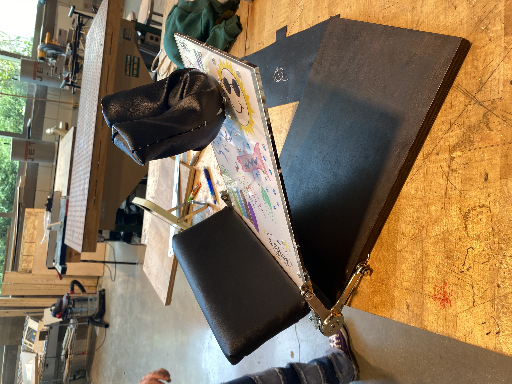
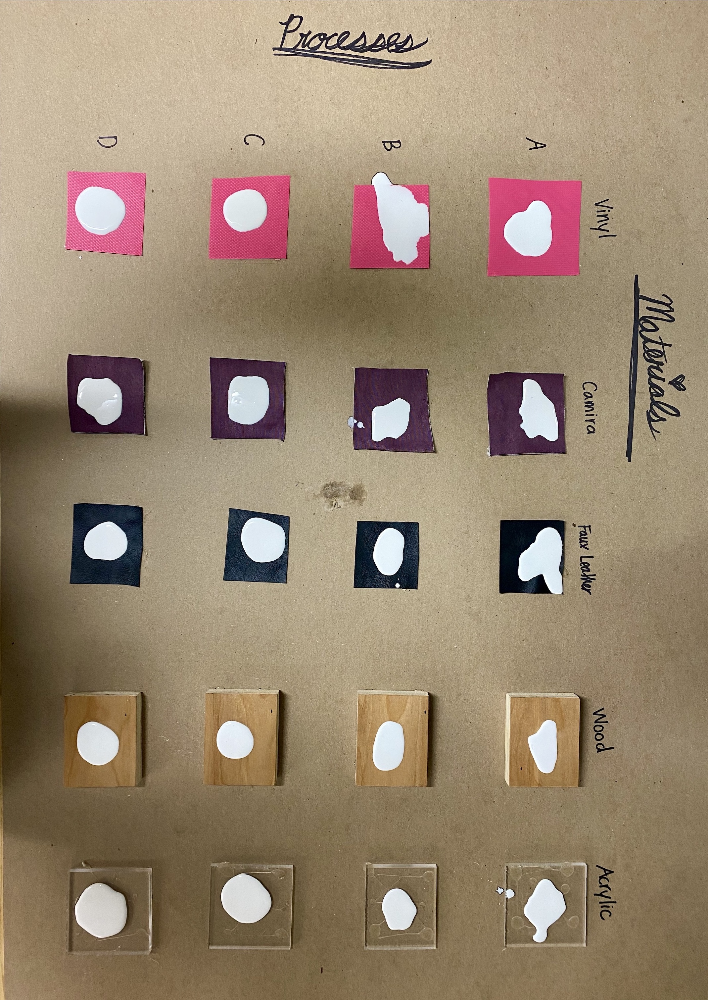

Infant Videofluoroscopy Chair
Intern at Northwestern's Segal Design Institute
Designing for Real-World Applications
As an intern for the Segal Design Institute, I worked with partners of the university to solve design challenges. In this case, I partnered with a doctor in Northwestern's Fienberg school of medicine that conducted swallowing studies on infant babies. They expressed the need to have an adjustable chair for infants that could adequately restrain them while also not interfering with their X-ray equipment.
A large part of this project required understanding the core needs of our client. By interviewing our client and other doctors, I found that there were three core qualities needed in our infant videofluoroscopy chair:
- Quick setup and breakdown
- Comfortable restraint of different sized babies
- No material interferance with X-rays
The final design (right) featured an adjustable peg-board design with a moldable headrest and cushioned base on an easily cleaned acryllic base.


Importance of Testing
Throughout this process, I learned the importance of creating and running quality experiments with sound analysis. In testing upholstery materials for stain resistance (left), I utilized factorial testing, and ran a partial factorial test to determine the best combination of materials for stain resistance, babies tend to be messy! This testing provided us with the ideal material to upholster our chair with.
Rapid Prototyping
I also learned most of my rapid prototyping skills from this project. I learned how to laser cut, sew, and mill complex geometries by hand. These skills were necessary for quick iteration so that I could gain quick feedback from the client without wasting precious time. Prototyping and testing allowed for us to validate specific design features and offer our client multiple options in one meeting.
Check out some of my iteration below!
Evolution of the infant chair